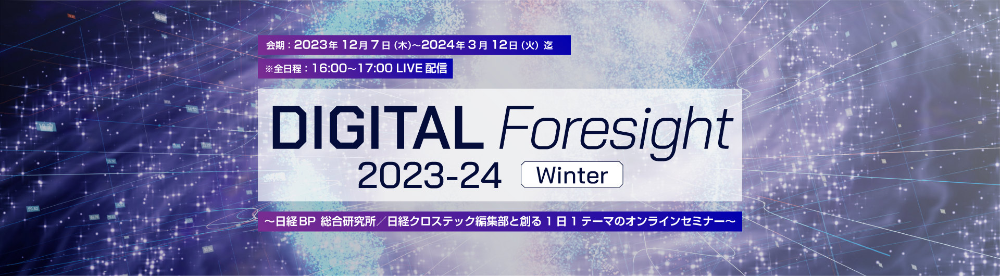
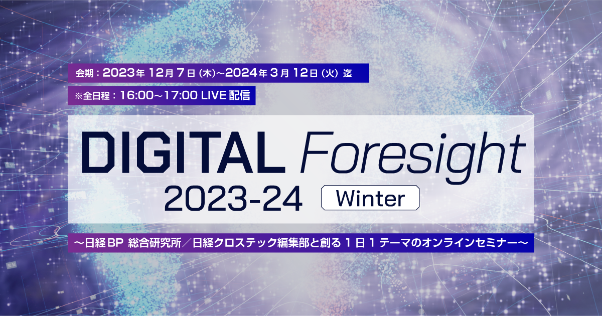

 
「DIGITAL Foresight」は企業のビジネス変革の推進をICT関連の技術系専門メディアを多数有する日経BPが後押しするために、生まれたオンラインセミナー（LIVE）でこの夏の開催で8回目を迎えます。
忙しいビジネスパーソンが最新の技術トレンドを効率的に把握できるように、1日1テーマ、1時間で解説するというコンセプトの元で、この冬も12月7日（木）～3月12日（火）の会期中、毎週火曜日と木曜日（12月22日のみ金曜日）の夕方16:00～17:00の時間帯に番組を無料配信いたします。
第1部（前半30分）は日経クロステック編集部員による注目テーマに関するトレンド解説（講演または対談）、第2部（後半30分）は1部で取り上げた注目テーマに関する最新のソリューション紹介と事例紹介を協賛社様と日経BP 総合研究所の研究員による対談形式で解説します。
アンケート回答者の中から抽選で100名様に
「Amazonギフト券（1,000円分）」進呈！
＊複数セミナーご回答で当選確率はさらにUP
本セミナーはオンラインセミナー（LIVE）です。
開催概要
- 名称
-
DIGITAL Foresight 2023-24 Winter
～日経BP 総合研究所 / 日経クロステック編集部と創る1日1テーマのオンラインセミナー～
- 日程
-
【12月開催分】※5日間
2023年12月7日（木）、12月12日（火）、12月14日（木）、12月19日（火）、12月22日（金）【2024年1月開催分】※3日間
2024年1月16日（火）、1月23日（火）、1月25日（木）【2024年2月開催分】※4日間
2月8日（木）、2月15日（木）、2月20日（火）、2月22日（木）【2024年3月開催分】※3日間
2024年3月5日（火）、3月7日（木）、3月12日（火）※15日間（予定）／全日程：16:00～17:00
- 開催形式
- オンラインセミナー（LIVE）
- 主催
- 日経BP 総合研究所 イノベーションICT ラボ
- 協賛
- アドビ、Coupa、グーグル、日本ヒューレット・パッカード、NTTデータ、セールスフォース・ジャパン（Mulesoft）、セールスフォース・ジャパン（Slack）、Snyk ほか（ABC順）
- 参加料
-
無料／事前登録制（先着順）
※受講数に限りがあり、件数に到達した場合は、その時点で締め切らせていただきます。
ご了承ください。
- 対象者
-
DXリーダーを志す大企業にお勤めの中間管理職層
経営企画及び経営戦略部門、営業
マーケティング部門、人事 総務 経理 財務などコーポレート部門、
設計・製造、情報システム部門などの管理職、担当者など
-
開催終了：2023年12月
-
【テーマ】生成AI×リスク管理【テーマ】生成AI×リスク管理
16:00 ～ 16:30
生成AIのビジネス応用に伴うリスクをどう制御するか
日経BP クロスメディア編集
編集委員浅川 直輝生成AIをビジネスに応用するうえで最大の壁となるのが、生成AIという発展途上の技術に付随するリスクである。
機密データの漏洩、著作権の侵害、倫理面で不適切なコンテンツの表示…。
こうしたリスクとうまく付き合いコントロールするための勘所を、先進企業の事例を基に明らかにする。【テーマ】生成AI×リスク管理16:30 ～ 17:00
注目の「コード生成AI」に潜む罠、コードに含まれる脆弱性にどう対処する？
Snyk
シニアソリューションエンジニア
古山 早苗 氏国内ユーザー企業、SIerを経て、外資系ソフトウェアベンダーでインフラから開発まで様々な製品・ソリューションのプリセールスを経験。マルチクラウドとアプリケーションモダナイズに関するソリューションの普及に注力する中で、デベロッパーセキュリティの必要性と重要性を感じ、Snykに入社。
日経BP 総合研究所
上席研究員
渡辺 享靖日本語で指示すればプログラムコードを自動生成してくれる「コード生成AI」は、画期的なツールとして開発現場で試行され始めています。しかし、コーディング作業が楽になる半面、AIが生成するコードの大半に何らかの脆弱性が含まれているとされています。その脆弱性を見逃せば、システム開発の後工程に重大な影響を及ぼすでしょう。このセッションでは、AIによるコード生成と脆弱性検出のデモンストレーションを交えながら、堅牢なシステムを効率的に開発するためのソリューションについて解説します。
-
【テーマ】生成AI×ノーコード【テーマ】生成AI×ノーコード
16:00 ～ 16:30
生成AIで加速するノーコード開発
日経クロステック
シニアエディター大森 敏行DX推進やシステム内製化の流れ、開発人材の極端な不足などを背景に、プログラムコードを記述せずにシステムを開発できる「ノーコード」が注目されています。最近、欲しいアプリを文章で指示するだけで作成してくれる生成AI対応のノーコードツールが登場しました。生成AIがノーコードをどう変えていくかについて解説します。
【テーマ】生成AI×ノーコード16:30 ～ 17:00
生成AIを賢くするためのAPI連携のベストプラクティス
セールスフォース・ジャパン
（Mulesoft）
ソリューション・エンジニアリング統括本部
MuleSoft本部 第一ソリューション部
リードソリューションエンジニア 立山 重幸 氏日経BP 総合研究所
フェロー 桔梗原 富夫スマートフォンが様々なアプリケーションとつながることでイノベーションを起こしてきたように、今注目されている生成AIもそれだけで利用するよりも、業務に組み込まれることでその真価を発揮します。一方、汎用的なLLMはハルシネーションの不安もありエンタープライズ領域で活用するにはアプリ側に多大な負荷が発生してしまいます。「Garbage in garbage out」にならないように信頼できるデータソースにリアルタイム連携が重要であるものの、自社システムがレガシーであり連携のためのAPIの準備ができない企業も多いのではないでしょうか。
本セッションでは、生成AIの前準備としてレガシーシステムをローコードでAPIを構築していくためのベストプラクティスをご紹介します。
-
【テーマ】業務改革×ロボット【テーマ】業務改革×ロボット
16:00 ～ 16:30
第3の労働力ロボットでどこまで効率化が進むか
日経クロステック
副編集長高市 清治データセンターや物流施設、工場などでロボットやAGV／AMR、ドローンなどによる業務の自動化／効率化がどこまで進んでいるのか。
取材した実例を基に紹介する。また、日経クロステックの読者を対象にしたアンケート調査結果を基に、現場で直面した課題やその解決策を探る。【テーマ】業務改革×ロボット16:30 ～ 17:00
人手不足の建物点検をロボットが救う
「人の代替」だけでなく「人の超越」もNTTデータ
法人コンサルティング＆マーケティング事業部
課長代理 奥村 友佳 氏NTTデータに入社後、2018年までデータセンタ事業部にて新規顧客開拓営業を担当。
2019年より法人コンサルティング＆マーケティング事業部にて製造業のお客様のDX推進やライフサイエンス分野の新規事業開発に従事。
2021年より社内アイディアコンテストをきっかけにロボットを使った新規事業の企画・推進を行う。日経BP 総合研究所
上席研究員 菊池 隆裕物流業界では「2024年問題」として人手不足に注目が集まっているが、その他の業界・企業でも人手不足は深刻化している。人手不足の解決策の1つはロボットの活用だ。
これまで人手に頼っていた業務をロボットで自動化するアプローチだが、人を超える能力を活かした活用も視野に入っている。
本セッションでは、データセンターや工場などの設備管理業務におけるロボットの活用例と導入時のポイント、そして将来展望を紹介する。
-
【テーマ】セキュリティ【テーマ】セキュリティ
16:00 ～ 16:30
一般ユーザーを狙うサイバー攻撃の脅威、危なすぎる現状と効果的な対策
日経クロステック
編集委員勝村 幸博一般のユーザーを狙ったサイバー攻撃（ネット詐欺）が後を絶ちません。特に被害が多いのがフィッシング詐欺とサポート詐欺です。攻撃者の手口は巧妙化の一途をたどっています。セキュリティソフトなどを導入していてもそれだけでは防げなくなっています。被害に遭わないためには、攻撃者の手口を知ることがなによりも重要です。そこで本講演では、最新の手口と効果的な対策について解説します。
【テーマ】セキュリティ16:30 ～ 17:00
攻撃が集中するブラウザの「多層的な防御」こそセキュリティの要
グーグル
企業向け Chrome ブラウザ アジア太平洋地域
統括本部長 毛利 健 氏グーグルにて Chrome ブラウザのアジア・日本の企業向けチームをリード。
Web 及びクラウド活用が増す中で、重要な役割を担うブラウザの運用効率化やセキュリティ向上を訴求。前職の日本マイクロソフトではエンドポイントの運用管理ソリューションを15年間担当。多角的なエンドポイントの運用経験からブラウザの運用でシンプルな管理及びゼロトラストセキュリティが実現できることを推進。日経BP 総合研究所
上席研究員 渡辺 享靖近年増加傾向にある Web やブラウザの脆弱性を標的とした攻撃に対して、 Chrome ブラウザは毎日数十億を超えるエンドポイントからのアクセスによる膨大なセキュリティデータと多層的な防御によりその安全性を担保しています。
Chrome ブラウザによる安全性と生産性を両立したブラウザのセキュリティ対策や運用管理について解説します。
-
【テーマ】間接業務DX【テーマ】間接業務DX
16:00 ～ 16:30
生成AIと法制度で変わる「間接業務」、効率化の勘所
日経クロステック／日経コンピュータ
副編集長中川 真希子DX（デジタルトランスフォーメーション）を推進する上で、メスを入れるべき領域の1つに「間接業務」があります。間接業務は目立たず放置されがちですが、真剣に取り組めば飛躍的に生産性が上がる可能性があります。インボイス制度などの経理のデジタル化、生成AIで変わる問い合わせ対応やマニュアル運用などを中心に勘所を紹介します。
【テーマ】間接業務DX16:30 ～ 17:00
利益を生み出すDX：事例で学ぶ調達・購買DXに着手すべき理由
Coupa
代表取締役社長 小関 貴志 氏NECにて大手企業に対する法人営業に従事し、その後デル、セールスフォース・ドットコムでインサイドセールス、セールス、オンラインマーケティング、営業教育部門のマネジメントを歴任、2014年からはマルケトの立ち上げに参画。2021年4月よりCoupa株式会社 代表取締役社長に就任。
日経BP 総合研究所
フェロー 桔梗原 富夫「調達・購買」は全社で取り組むべき経営課題という認識が常識になりつつあります。
しかしこれまで、調達・購買業務のDXはあまり手つかずでした。
ERPを導入している企業でも、非効率な手作業が残っていたり、全社のあらゆる支出を「利益に貢献する」ために最適化しきれていないのが実態ではないでしょうか。
そこで今、注目されているのがBSM(Business Spend Management:ビジネス支出管理）です。
CoupaのBSMプラットフォームを活用して特に「間接材支出」を可視化、統制、最適化することで大きな成果を上げている企業の事例を紹介しつつ、調達・購買DXに取り組むべき価値、実践のポイントを解説します。
お問い合わせ
日経BP読者サービスセンターセミナー係
お問い合わせ